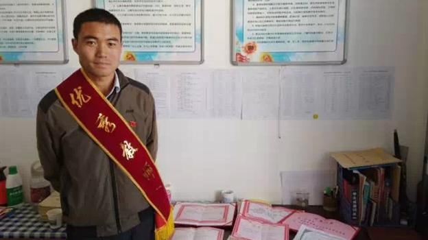

学高为师，身正为范——王宁老师
“学高为师，身正为范”，这不仅仅是王宁老师的座右铭，更是真实的生活写照。
“你要给学生一滴水，你必须要拥有一杯水；你要给学生一杯水，你首先要拥有一桶水；你要给学生一桶水，你必须首先要拥有一片海。”执教七年以来，王宁老师始终坚信这个道理。
在语文教学中，王宁老师主要通过情感教学和感染教育让学生投入到轻松的语文学习中。“让学生爱上语文，首先要让学生体会到语文在具体生活中的魅力，最后很多学生都以学习语文为乐，”比如在班内开展书法比赛，开展趣味知识竞赛，组织诗词朗诵会，开展简单的辩论赛等活动。
- 执行机构：成都云公益发展促进会
- 善款信息：成都市慈善总会